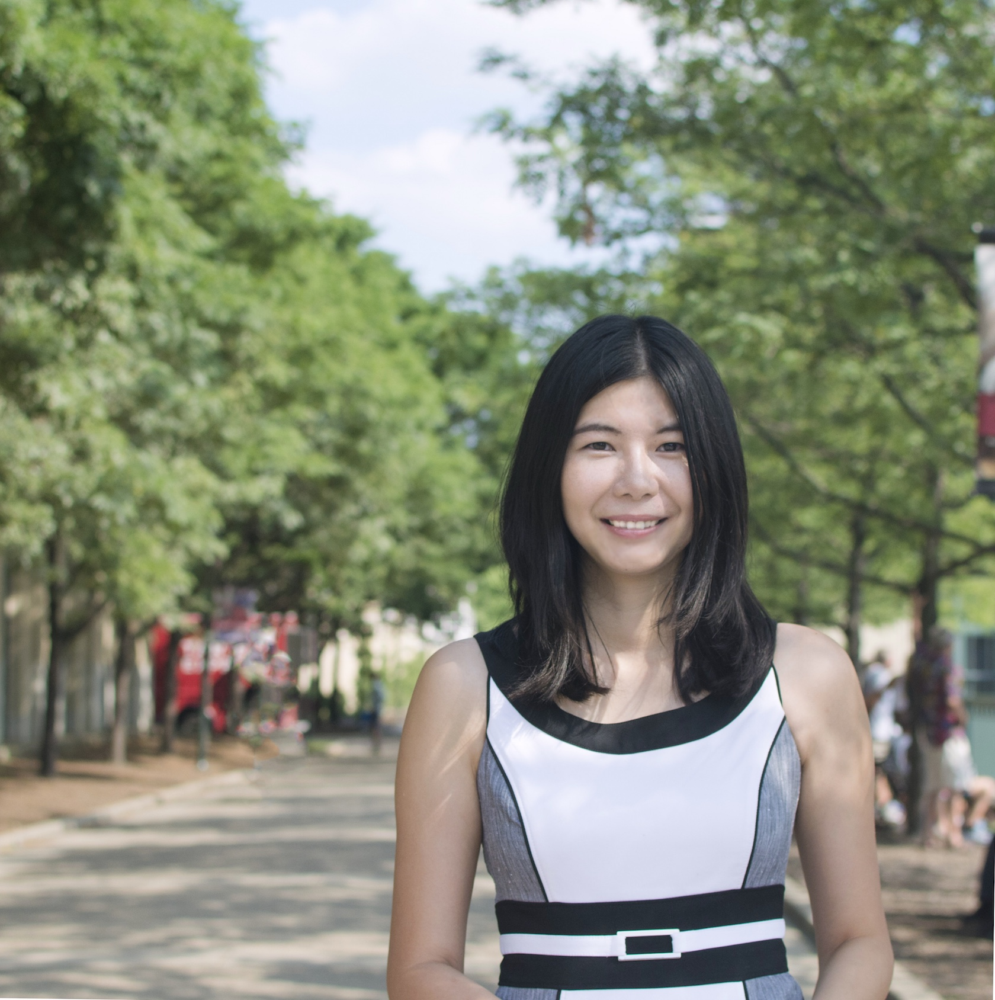

| Date |
Speaker |
Talk Summary |
| Jan 18 |
|  |
Dr. Zhou Yu is an Assistant Professor at Columbia University.
Prior to this she was an Asst. Prof. at UC Davis.
Zhou received her Ph.D. from the Language Technologies Institute at Carnegie Mellon University in 2017, and B.S. in Computer Science and B.A. in English from Zhejiang University.
Zhou's research interests are in designing algorithms for real-time intelligent interactive systems, optimizing human-machine communication via studies of multimodal sensing and analysis, speech and natural language processing, machine learning and human-computer interaction.
|
|
| Jan 27 |
|
Dr. Fuxin Li is an Assistant Professor at Oregon State University.
Prior to this, he was a Research Scientist and Post-Doctoral Researcher at Georgia Tech; Research Scientist at Sminchisescu group, INS, University of Bonn.
Fuxin received his Ph.D. from the Institute of Automation, Chinese Academy of Sciences in 2008, and B.S. from Zhejiang University in 2001.
Fuxin's research direction is machine learning and computer vision, with a major interest in using and designing new machine learning algorithms to attack the structural data in images and videos, especially big data originating from videos.
|
|
| Feb 03 |
|
Dr Vicente Ordóñez Román is an Assistant Professor in at the University of Virginia.
Prior to this, he was a Visiting Professor at Adobe Research and Visiting Researcher at the Allen Institute for AI.
He received his Ph.D. in Computer Science at the University of North Carolina at Chapel Hill in 2015, an MS in Computer Science at Stony Brook University (SUNY), and an engineering degree at the Escuela Superior Politécnica del Litoral in Ecuador.
Vicente's research interests are in analyzing, and mining useful human insights from enormous amounts of images with associated text to improve visual recognition; building efficient visual recognition models that can perform high-level perceptual tasks; and fairness and accountability in machine learning applications.
|
|
| Feb 10 |
|
Dr Xialong Wang is an Assistant Professor at UC San Diego.
He was a postdoctoral fellow at UC Berkeley with Alexei Efros and Trevor Darrell.
Xiaolong received his Ph.D. in Robotics from Carnegie Mellon University in 2019;
MS from Sun Yat-Sen University in 2014;
and B.S. from South China Agricultural University in 2011.
Xialong is interested in Computer Vision, Machine Learning and Robotics, specifically on the topics of Self-Supervised Learning, Video Understanding, Common Sense Reasoning, RL and Robotics.
|
|
| Feb 15 |
|
Dr Abhishek Das is a Research Scientist at Facebook AI Research.
Previously he received his Ph.D. in Computer Science at Georgia Tech, advised by Dhruv Batra, and working closely with Devi Parikh. He received his bachelor's degree from Indian Institute of Technology at Roorkee.
Abhishek's research focuses on deep learning and its applications in climate change, and in building agents that can see (computer vision), think (reasoning/interpretability), talk (language modeling), and act (reinforcement learning).
|
|
| Feb 22 |
 |
Dr Xin (Eric) Wang is an Assistant Professor of Computer Science and Engineering at UC Santa Cruz.
He obtained his Ph.D. degree from UC Santa Barbara and Bachelor's degree from Zhejiang University, both in Computer Science.
Eric's research interests include Natural Language Processing, Computer Vision, and Machine Learning, with an emphasis on building embodied AI agents that can communicate with humans using natural language to perform real-world tasks.
|
|